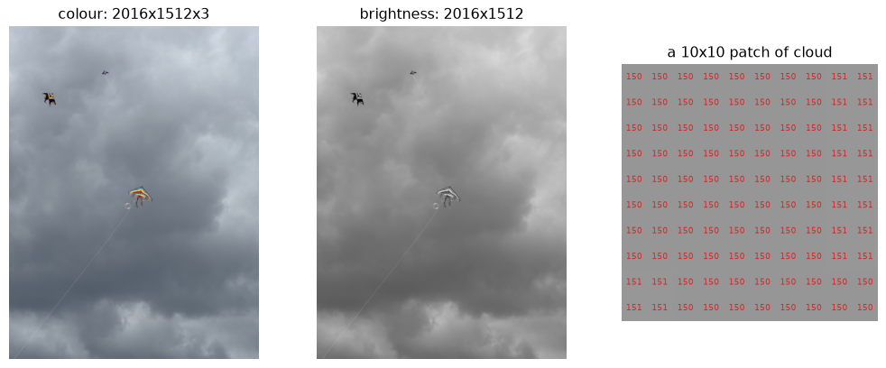
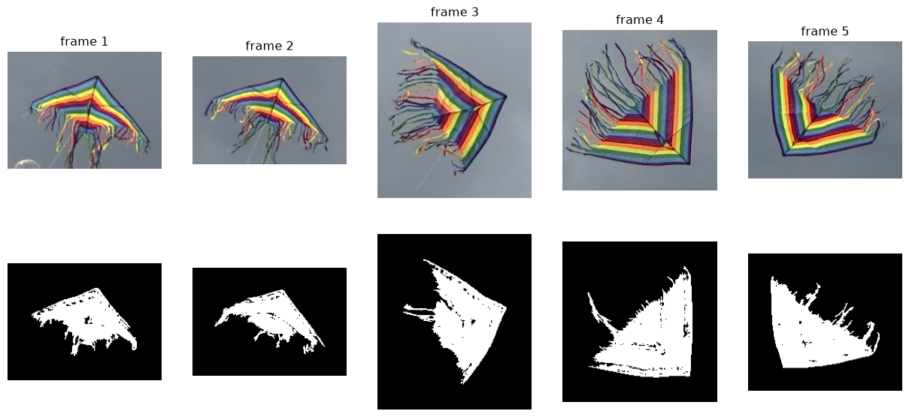
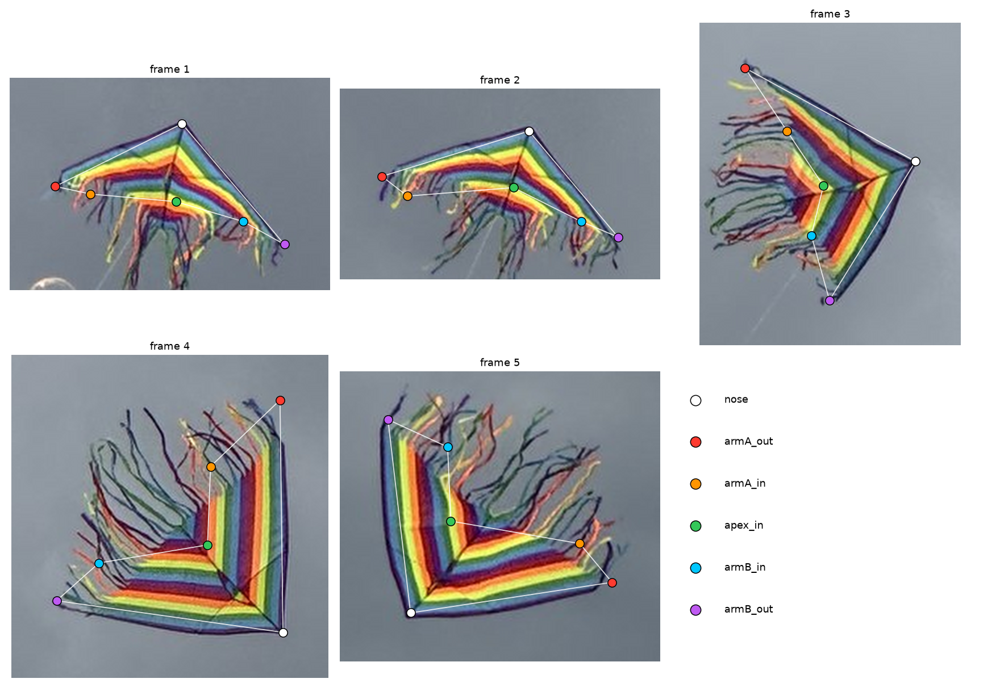
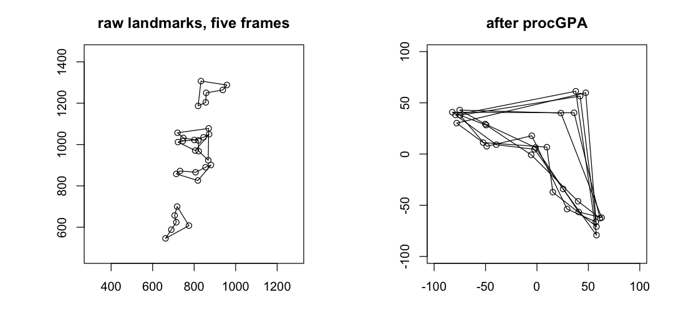
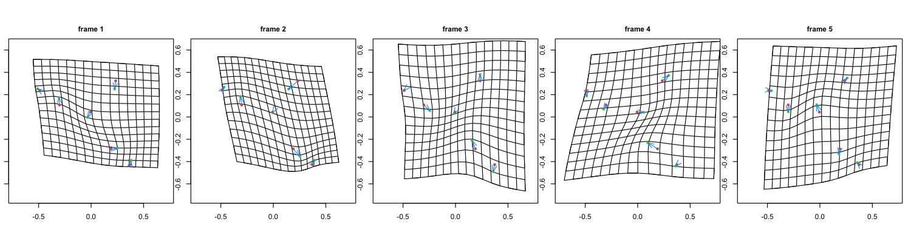
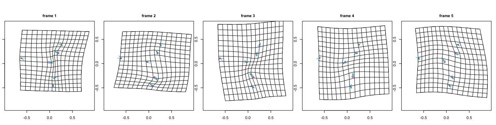
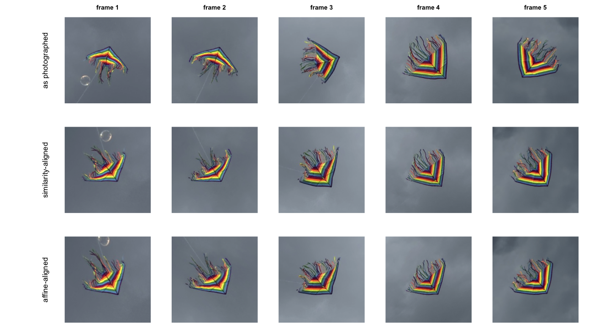
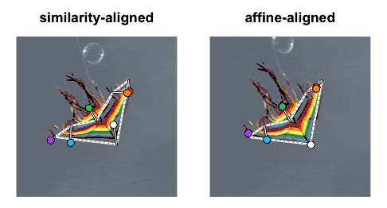

What happens when you point Kendall shape analysis at a photograph instead of a specimen
Statistics
Geometry
Computer Vision
Author
Ravi Kalia
Published
August 18, 2026
Five Photos of One Kite, Five Different Shapes
1 Problem statement
Kendall shape analysis quotients out translation, scale, and rotation (the similarity group). Field photographs of a rigid object introduce perspective, which similarity cannot remove.
Test case: five iPhone photographs of one kite, nine seconds apart. Correct shape difference = 0. Standard GPA reports up to 0.33 Riemannian separation.
Provenance: author photographs, Villa de Leyva kite festival, Boyacá, Colombia, 15 August 2026.
Format: iPhone HEIC, committed at 1512 × 2016 (half of 3024 × 4032). Timestamps 13:26:12–13:26:21 (9 s span).
Collection: handheld, no tripod, scale bar, or fixed distance.
Objective: does one rigid object photographed five times yield one shape under similarity quotient?
Downstream impact: morphometric studies comparing photographed specimens may confound biology with viewpoint if the nuisance group is wrong.
Why this dataset: ground truth is known (one unchanged kite); failure isolates the nuisance group, not landmark error.
3 Image representation
A colour photograph is a \(H \times W \times 3\) array of RGB intensities.
Code
import numpy as npimport matplotlib.pyplot as pltfrom PIL import Imagephoto = Image.open("photos/kite-01.jpg").convert("RGB")rgb = np.asarray(photo)grey = np.asarray(photo.convert("L"))fig, axes = plt.subplots(1, 3, figsize=(13, 5))axes[0].imshow(rgb)axes[0].set_title(f"colour: {rgb.shape[1]} wide x {rgb.shape[0]} tall x {rgb.shape[2]}")axes[1].imshow(grey, cmap="gray")axes[1].set_title(f"brightness: {grey.shape[1]} wide x {grey.shape[0]} tall")patch = grey[600:610, 500:510]axes[2].imshow(patch, cmap="gray", interpolation="nearest", vmin=0, vmax=255)for i inrange(10):for j inrange(10): axes[2].text(j, i, patch[i, j], ha="center", va="center", color="tab:red", fontsize=7)axes[2].set_title("a 10x10 patch of cloud")for ax in axes: ax.axis("off")plt.show()

Figure 1: One frame as a picture, as a brightness matrix, and as raw numbers. The sky patch is flat and bright: cloud is high in brightness and almost zero in colour.
Cloud patch: high brightness, low colour spread.
4 Saturation segmentation
Saturation = \((\max R,G,B - \min R,G,B) / \max R,G,B\). Kite fabric: high saturation. Sky: near zero.
Threshold 0.30 + largest connected component isolates the kite in all five frames. Streamers occupy ~half each mask and move independently — excluded from landmarks.
Code
from scipy import ndimagedef saturation(image):"""Distance from grey, per pixel: (max channel - min channel) / max channel.""" a = np.asarray(image).astype(np.float32) /255.0 top, bottom = a.max(axis=2), a.min(axis=2)return (top - bottom) / np.maximum(top, 1e-6)def largest_blob(mask):"""The biggest connected component, plus its bounding box.""" labels, count = ndimage.label(mask) sizes = ndimage.sum(mask, labels, range(1, count +1)) best =int(np.argmax(sizes)) +1return labels == best, ndimage.find_objects(labels)[best -1]fig, axes = plt.subplots(2, 5, figsize=(16, 7))for frame inrange(1, 6): image = Image.open(f"photos/kite-{frame:02d}.jpg").convert("RGB") kite, box = largest_blob(saturation(image) >0.30) pad =30 rows =slice(max(0, box[0].start - pad), box[0].stop + pad) cols =slice(max(0, box[1].start - pad), box[1].stop + pad) axes[0][frame -1].imshow(np.asarray(image)[rows, cols]) axes[0][frame -1].set_title(f"frame {frame}") axes[1][frame -1].imshow(kite[rows, cols], cmap="gray")for ax in axes.ravel(): ax.axis("off")plt.show()

Figure 2: Top: the kite as photographed, cropped from each frame. Bottom: every pixel with saturation above 0.30. The sky vanishes completely.
Same kite appears as wide triangle (frame 1) vs narrow chevron (frame 4). Viewpoint changed; kite did not.
5 Landmark correspondence
Procrustes requires landmarks: labelled points with the same anatomical meaning in every frame.
Streamers excluded (non-rigid, no stable correspondence).
Six sail landmarks on the rigid colour-chevron block:
Label
Location
nose
Outer apex of leading edges
armA_out, armB_out
Far ends of leading edges
armA_in, armB_in
Inner boundary ends on each arm
apex_in
Inner apex where inner boundaries meet
Bilateral symmetry: no single image determines which wing is armA vs armB. Fixed by consistent traversal order; frame 5 labels swapped relative to the photograph.
Reflection: Procrustes allows reflections (forbid → SS 0.855 vs 0.111 with allow). Affine ladder fits per frame separately and is not reflection-invariant.
Digitisation: hand-placed from committed photos, ±5 px on ~160 px sail width.

The six sail landmarks in each frame. Nothing sits on a streamer.
Code
import csvORDER = ["nose", "armA_out", "armA_in", "apex_in", "armB_in", "armB_out"]rows =list(csv.DictReader(open("landmarks.csv")))by_frame = {}for row in rows: by_frame.setdefault(int(row["frame"]), {})[row["landmark"]] = (float(row["x"]), float(row["y"]))X = np.stack([np.array([by_frame[f][name] for name in ORDER]) for f insorted(by_frame)])print(f"{X.shape[0]} configurations of {X.shape[1]} landmarks in {X.shape[2]}D")print(f"mean centroid size: {np.mean([np.linalg.norm(c - c.mean(0)) for c in X]):.0f} px")
5 configurations of 6 landmarks in 2D
mean centroid size: 160 px
6 Nose-angle test
Similarity transformations preserve angles. If frames differ only by similarity, nose angle is invariant.
Code
def nose_angle(config):"""Angle at the nose, between the two leading edges, in degrees.""" left = config[ORDER.index("armA_out")] - config[ORDER.index("nose")] right = config[ORDER.index("armB_out")] - config[ORDER.index("nose")] cosine = np.dot(left, right) / (np.linalg.norm(left) * np.linalg.norm(right))return np.degrees(np.arccos(cosine))angles = np.array([nose_angle(c) for c in X])for frame, angle inenumerate(angles, start=1):print(f" frame {frame}: {angle:6.2f} degrees")print(f"\nspread: {angles.max() - angles.min():.1f} degrees")
Nose-angle spread: 31°. ±5 px jitter: 3.6–6.3° SD. Inter-frame map is not similarity.
7 Generalised Procrustes analysis
Standard pipeline: centre, scale to unit Frobenius norm, iterate rotation-to-mean (GPA).
Code
def centre_and_scale(config):"""Remove translation and size.""" centred = config - config.mean(axis=0)return centred / np.linalg.norm(centred)def align_onto(config, target):"""Least-squares orthogonal map of `config` onto `target`, via an SVD. Reflections are allowed, deliberately. The usual version of this function forbids them, on the grounds that a mirror image is a different shape. That is right for a left and a right hand; it is wrong here, because which wing of a symmetric sail got labelled `armA` is a free choice rather than a fact about the kite (see above). Forbidding reflection would charge that free choice to the kite's shape. """ u, _, vt = np.linalg.svd(target.T @ config)return config @ (vt.T @ u.T)def gpa(configs, prepare=centre_and_scale, tol=1e-13, max_iter=500):"""Generalised Procrustes: prepare each configuration, then iterate to a mean.""" aligned = np.stack([prepare(c) for c in configs]) mean = aligned[0]for _ inrange(max_iter): aligned = np.stack([centre_and_scale(align_onto(c, mean)) for c in aligned]) new_mean = centre_and_scale(aligned.mean(axis=0))if np.linalg.norm(new_mean - mean) < tol:break mean = new_meanreturn aligned, meanaligned, mean_shape = gpa(X)residual = np.linalg.norm(aligned - mean_shape, axis=(1, 2))similarity_ss =float((residual **2).sum())print("residual to the mean shape:", residual.round(4))print(f"Procrustes sum of squares: {similarity_ss:.5f}")print(f"RMS residual: {residual.mean():.4f} ({100* residual.mean():.1f}% of centroid size)")
residual to the mean shape: [0.1381 0.1764 0.1416 0.1643 0.1173]
Procrustes sum of squares: 0.11100
RMS residual: 0.1475 (14.8% of centroid size)
RMS residual ≈ 0.15 at unit size. Procrustes SS = 0.111.
Figure 3: The five sails after generalised Procrustes analysis, with the mean shape in black. This is the best that translation, scale and rotation can do.
8 Transformation model ladder
Candidate groups (nested):
Model
DOF
Preserves
Use case
Similarity
4
Angles
Lab bench, square camera
Affine
6
Parallel lines
Weak perspective (distant camera)
Projective
8
Straight lines
General plane photograph
Fit each model mapping frames 2–5 onto frame 1; compare RMS pixel error.
Code
from scipy.optimize import least_squaresdef fit_similarity(src, dst, allow_reflection=True):"""Best similarity map from `src` onto `dst` (Umeyama). Reflection is allowed by default, matching the Procrustes alignment above and for the same reason: the wing labelling is a free choice. Refusing it takes more than flipping the rotation matrix -- the smallest singular value's contribution to the optimal scale flips sign with it. Leaving `trace` at ``sv.sum()`` in that branch overshoots the scale, and is an easy bug to write by accident. """ mu_s, mu_d = src.mean(0), dst.mean(0) s0, d0 = src - mu_s, dst - mu_d u, sv, vt = np.linalg.svd(d0.T @ s0) rotation = u @ vt trace = sv.sum()ifnot allow_reflection and np.linalg.det(rotation) <0: u = u.copy() u[:, -1] *=-1 rotation = u @ vt trace = sv[0] - sv[1]return (s0 @ rotation.T) * (trace / (s0 **2).sum()) + mu_ddef fit_affine(src, dst): design = np.hstack([src, np.ones((len(src), 1))])return design @ np.linalg.lstsq(design, dst, rcond=None)[0]def apply_homography(h, src): p = np.hstack([src, np.ones((len(src), 1))]) @ h.Treturn p[:, :2] / p[:, 2:3]def fit_projective(src, dst):"""Normalised DLT for a starting point, then refine on *geometric* error. The plain DLT minimises an algebraic residual, which on six points can be far from the least-squares answer -- badly enough to score worse than the affine fit nested inside it, which is impossible for a correct fit. """def normalise(p): mu = p.mean(0) q = p - mu s = np.sqrt(2) / np.sqrt((q **2).sum(1)).mean()return np.array([[s, 0, -s * mu[0]], [0, s, -s * mu[1]], [0, 0, 1]]), np.hstack( [q * s, np.ones((len(p), 1))]) t_src, ns = normalise(src) t_dst, nd = normalise(dst) rows = []for (x, y, _), (u, v, _) inzip(ns, nd): rows.append([x, y, 1, 0, 0, 0, -u * x, -u * y, -u]) rows.append([0, 0, 0, x, y, 1, -v * x, -v * y, -v]) _, _, vt = np.linalg.svd(np.array(rows)) guess = np.linalg.inv(t_dst) @ vt[-1].reshape(3, 3) @ t_src guess = guess / guess[2, 2] fit = least_squares(lambda p: (apply_homography(np.append(p, 1.0).reshape(3, 3), src) - dst).ravel(), guess.ravel()[:8], method="lm", max_nfev=20000)return apply_homography(np.append(fit.x, 1.0).reshape(3, 3), src)def rms(predicted, target):returnfloat(np.sqrt(((predicted - target) **2).sum(1).mean()))MODELS = [("similarity", 4, fit_similarity), ("affine", 6, fit_affine), ("projective", 8, fit_projective)]print(f"{'onto frame 1':>14}"+"".join(f"{n +f' ({d})':>15}"for n, d, _ in MODELS))totals = {name: [] for name, _, _ in MODELS}for j inrange(1, 5): line =f"{'frame '+str(j +1):>14}"for name, _, fit in MODELS: value = rms(fit(X[j], X[0]), X[0]) totals[name].append(value) line +=f"{value:15.2f}"print(line)print(f"\n{'mean':>14}"+"".join(f"{np.mean(v):15.2f}"for v in totals.values()) +" px")
Noise floor: RMS between two independent ±5 px jittered copies of the same frame (true difference = 0).
Code
rng = np.random.default_rng(1)print(f"{'':12}{'observed':>10}{'noise floor':>13}{'ratio':>8}")for name, _, fit in MODELS: scores = []for base in X:for _ inrange(120): a = base + rng.normal(0, 5, base.shape) b = base + rng.normal(0, 5, base.shape) scores.append(rms(fit(a, b), b)) floor, seen =float(np.mean(scores)), float(np.mean(totals[name]))print(f"{name:12}{seen:10.2f}{floor:13.2f}{seen / floor:7.1f}x")
Projective: 6.7 / 5.8 px — no improvement over affine on six landmarks.
Reading: weak perspective holds; affine is the smallest adequate model for these photographs.
9 Affine quotient
Compare shapes up to affine maps, not similarity.
Trap: swapping GPA rotation for iterative affine fit collapses configurations (aspect ratio → 0.0002; false 74% viewpoint share).
Iterating affine fits to a mean is not affine Procrustes
Unit centroid size prevents shrink-to-point but not flatten-to-line. Check aspect ratio before trusting the residual.
Closed-form fix: centre, SVD-whiten to isotropic second moment (remove_affine). Any affine image shares the same canonical form.
Code
def remove_affine(config):"""Map a configuration to its affine-invariant canonical form.""" centred = config - config.mean(axis=0) u, _, _ = np.linalg.svd(centred, full_matrices=False) whitened = u * np.sqrt(len(config)) # singular values replaced by 1return whitened / np.linalg.norm(whitened)affine_aligned, affine_mean = gpa(X, prepare=remove_affine)affine_residual = np.linalg.norm(affine_aligned - affine_mean, axis=(1, 2))affine_ss =float((affine_residual **2).sum())aspect = [np.divide(*np.linalg.svd(c, compute_uv=False)[::-1]) for c in affine_aligned]print(f"aspect ratio of the aligned configurations: {np.mean(aspect):.3f} (1.0 = no collapse)")print(f"\nProcrustes SS, similarity quotient: {similarity_ss:.5f}")print(f"Procrustes SS, affine quotient : {affine_ss:.5f}")print(f"share of shape variation the viewpoint explains: {100* (1- affine_ss / similarity_ss):.1f}%")
aspect ratio of the aligned configurations: 1.000 (1.0 = no collapse)
Procrustes SS, similarity quotient: 0.11100
Procrustes SS, affine quotient : 0.06839
share of shape variation the viewpoint explains: 38.4%
Affine quotient removes 38% of similarity SS. Aspect ratio stays 1.0 (no collapse).
10 Digitisation noise floor
Simulate zero true shape difference: replicate one frame five times, jitter landmarks (\(\sigma\) px), measure Procrustes SS.
Gaussian \(\sigma = 5\) is slightly pessimistic vs ±5 px bound (RMS displacement ≈ 7 px).
Code
rng = np.random.default_rng(0)def procrustes_ss(configs, prepare): aligned, mean = gpa(configs, prepare=prepare)returnfloat((np.linalg.norm(aligned - mean, axis=(1, 2)) **2).sum())# Every frame gets a turn as the base. Which one you pick matters: the flattest# sails amplify jitter under the affine quotient, so a single base frame can# understate the floor by a factor of three.print(f"{'sigma':>7}{'similarity SS':>26}{'affine SS':>26}")for sigma in [2, 3, 5, 8]: per_base = np.array([ [np.mean([procrustes_ss(base + rng.normal(0, sigma, (5,) + base.shape), prepare)for _ inrange(300)])for prepare in (centre_and_scale, remove_affine)]for base in X ]) cells ="".join(f"{per_base[:, k].mean():14.4f} [{per_base[:, k].min():.4f}-{per_base[:, k].max():.4f}]"for k in (0, 1))print(f"{sigma:5.0f}px{cells}")print(f"\n{'observed':>7}{similarity_ss:14.4f}{'':15}{affine_ss:14.4f}")
#| eval: false
options(rgl.useNULL = TRUE)
library(shapes)
# landmarks.csv -> the k x m x n array every shapes:: function expects
X <- array(NA_real_, c(6, 2, 5)) # 6 landmarks, 2 coordinates, 5 frames
# Quotient out similarity. reflect = TRUE because the sail is bilaterally
# symmetric: no single photograph says which physical wing is which, so the
# labelling is a free choice and should not count as shape difference.
sim <- procGPA(X, scale = TRUE, reflect = TRUE)
# Quotient out affine, in closed form -- see the callout above for why the
# iterative version collapses.
whiten <- function(cfg) {
cfg <- scale(cfg, center = TRUE, scale = FALSE)
w <- svd(cfg)$u * sqrt(nrow(cfg))
w / sqrt(sum(w^2))
}
aff <- procGPA(array(apply(X, 3, whiten), dim(X)), scale = TRUE, reflect = TRUE)
# Pairwise Riemannian distance in Kendall shape space
riemdist(X[, , 1], X[, , 2])
# Deformation grids, mean shape -> each frame
tpsgrid(sim$mshape, sim$rotated[, , 3], mag = 1, ngrid = 16, opt = 1)
Code
import jsonr = json.load(open("r_results.json"))print(f"R {r['r_version']}, shapes {r['shapes_version']}\n")print(f"{'':22}{'R':>12}{'Python':>12}")print(f"{'similarity SS':22}{r['similarity']['procrustes_ss']:12.5f}{similarity_ss:12.5f}")print(f"{'affine SS':22}{r['affine']['procrustes_ss']:12.5f}{affine_ss:12.5f}")print(f"{'uniform share':22}{100* r['uniform_share']:11.1f}%{100* (1- affine_ss / similarity_ss):11.1f}%")riem = np.array(r["riemannian"])print("\npairwise Riemannian distance in shape space (R's riemdist):")print(np.round(riem, 3))print(f"\nlargest: {riem.max():.3f} between frames "f"{np.unravel_index(riem.argmax(), riem.shape)[0] +1} and "f"{np.unravel_index(riem.argmax(), riem.shape)[1] +1}")
R 4.0.5, shapes 1.2.6
R Python
similarity SS 0.11100 0.11100
affine SS 0.06839 0.06839
uniform share 38.4% 38.4%
pairwise Riemannian distance in shape space (R's riemdist):
[[0. 0.124 0.249 0.278 0.227]
[0.124 0. 0.298 0.326 0.237]
[0.249 0.298 0. 0.16 0.187]
[0.278 0.326 0.16 0. 0.192]
[0.227 0.237 0.187 0.192 0. ]]
largest: 0.326 between frames 2 and 4
Python and R agree to five decimal places. Maximum pairwise Riemannian distance: 0.33.

plotshapes on the raw landmarks and after procGPA. Removing position, size and rotation brings the five configurations onto one another — and the scatter still visible on the right is the 0.111 the post has been quoting all along.

Thin-plate splines carrying the mean shape onto each frame, after quotienting out similarity only. The grids have to absorb the entire viewpoint change, so they shear and bow across their whole width.

The same splines after quotienting out affine maps. The global shear is gone and what remains is local and much milder — though, per the caveat above, most of it is digitising noise rather than the kite.
12 Photograph warping
Thin-plate spline (TPS) warps images using the same landmark maps as tpsgrid. Each frame transported to a shared panel by similarity and by affine map.
#| eval: false
# U(r) = r^2 log r^2, the 2D biharmonic kernel: the shape a thin metal plate
# takes when pinned at the landmarks. Solving for an affine part plus one
# radial term per landmark gives the smoothest map carrying every source
# landmark exactly onto its target.
tps_kernel <- function(d2) ifelse(d2 > 0, d2 * log(d2), 0)
tps_fit <- function(src, dst) {
K <- tps_kernel(as.matrix(dist(src))^2)
P <- cbind(1, src)
L <- rbind(cbind(K, P), cbind(t(P), matrix(0, 3, 3)))
W <- solve(L, rbind(dst, matrix(0, 3, 2)))
list(src = src, w = W[seq_len(nrow(src)), ], a = W[nrow(src) + 1:3, ])
}
tps_apply <- function(fit, pts) {
d2 <- outer(pts[, 1], fit$src[, 1], "-")^2 + outer(pts[, 2], fit$src[, 2], "-")^2
cbind(1, pts) %*% fit$a + tps_kernel(d2) %*% fit$w
}
# Warping an image is the same map run backwards: for every output pixel, ask
# where in the original photograph it came from, then sample there.
warp <- function(photo, from, to) {
sample_image(photo, tps_apply(tps_fit(to, from), output_grid))
}
The static version first, because it carries the finding on its own and an animation should never be the only copy of a result.

Five photographs of one kite. Top: a plain window on each photograph, the same size in source pixels every time, centred on the kite so it stays in frame — orientation and relative size untouched. Middle: transported into a shared frame by the best similarity map. Bottom: by the best affine map.
Top row: cropped source windows.
Middle: similarity transport.
Bottom: affine transport. Middle-to-bottom change is small visually despite 38% SS reduction.
12.1 TPS extrapolation limits
Streamers smear outside the six-landmark hull. TPS interpolates inside; extrapolates (unreliably) outside. Streamers are non-rigid and lack correspondence.
12.2 Morph animation

Five photographs morphing through a common frame, aligned by similarity (left) and by affine (right). The white dashed hexagon is the mean shape, fixed in both panels. Spikes run from each mean landmark to where that frame’s landmark actually lands, drawn at three times life size — tpsgrid has a mag argument for the same reason. Shorter spikes on the right are the affine map’s 28% improvement in landmark registration.
Pixel SD across aligned frames: 0.127 (similarity) vs 0.128 (affine) on sail bounding box — visually indistinguishable. Landmark registration improves 7.0 → 5.1 px (25%); too small to see without magnification.
13 Summary
Kendall shape analysis removes only the nuisance group specified.
Similarity (translation, scale, rotation) is insufficient for field photographs with perspective.
Diagnostic checks: invariant angles, model ladder with noise floors, digitisation simulation, pixel warping.
Affine quotient fits these data; residual after affine is within ±5 px landmark noise.
14 References
Dryden, I. L., and Mardia, K. V. (2016). Statistical Shape Analysis, with Applications in R, 2nd ed. Wiley.